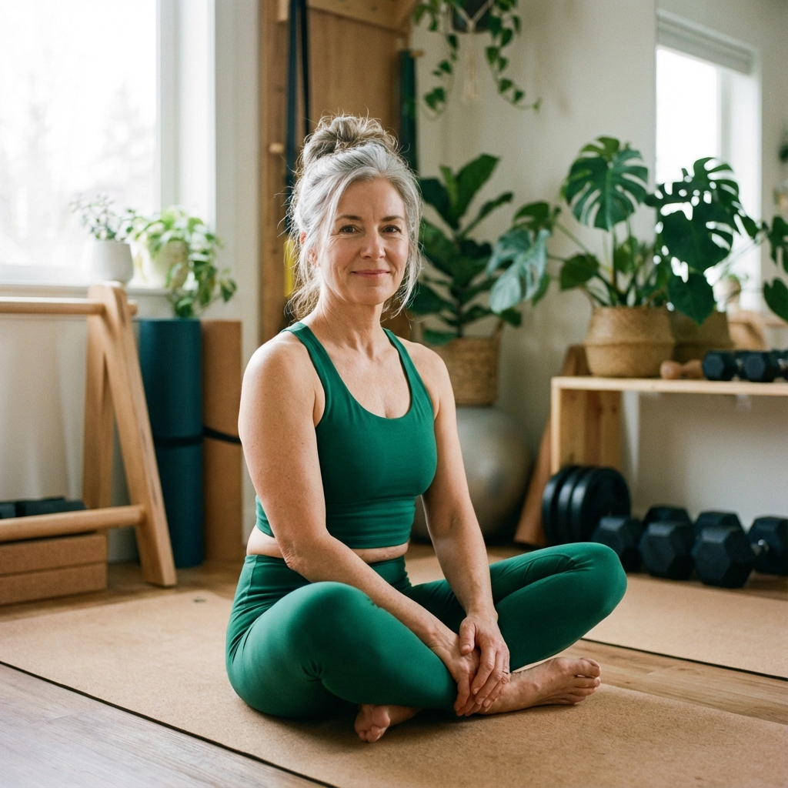

Meditation isn't about clearing your mind; it's about noticing when your mind has wandered and gently bringing it back. That "bringing it back" is a bicep curl for your brain.
The Body Scan
Ideally done lying down. Close your eyes and focus all your attention on your toes. Release any tension. Move to your ankles, calves, knees... all the way up to your jaw and forehead.
This grounding practice pulls you out of your "fight or flight" thoughts and back into your physical body, signaling safety to your nervous system.